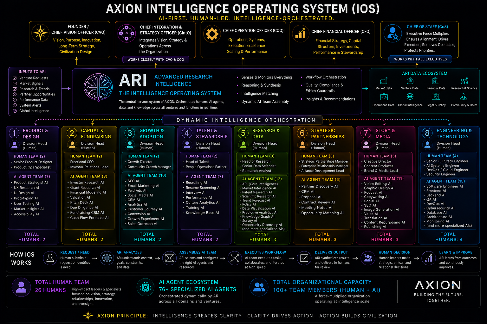

XII
The Future
100-year and 1000-year thinking, planetary intelligence, human flourishing, science, business, AI, and the Oath.
The Foundational Handbook For Building A New Civilization
A living framework for intelligence, stewardship, innovation, venture creation, and human flourishing. This is the governing document that lets AXION scale from onboarding to institution-building without losing its founding philosophy.
Document Architecture
The Constitution is organized like a modern institutional canon: part employee handbook, part operating system, part venture doctrine, part governance charter.
Why AXION exists, the origin story, founder letter, and the responsibility of building beyond companies.
The 21 Principles of AXION, ethics, long-term thinking, truth, humility, human-first AI, and stewardship.
Holding company, venture studio, research institute, education platform, media company, and civilization builder.
ARI, AI agents, knowledge graph, decision support, data governance, and human-led orchestration.
Communication, conflict, feedback, meetings, accountability, writing, curiosity, learning, and AI practice.
Revenue, treasury, licensing, AI, subscriptions, ventures, media, royalties, IP, research, and reinvestment.
Parent ownership, venture ownership, profit sharing, phantom equity, options, vesting, mission lock, and exits.
Idea submission, research, prototype, validation, funding, incubation, scale, spinoff, failure, and learning.
Executives, division heads, human specialists, AI agents, volunteers, advisors, researchers, partners, and KPIs.
Board, committees, ethics, risk, voting, founder powers, succession, IP, security, compliance, and transparency.
Members, events, masterminds, fellows, builders, founders, partners, chapters, recognition, and education.
le>100-year and 1000-year thinking, planetary intelligence, human flourishing, science, business, AI, and the Oath.
Book III
AXION is not a single company. It is a coordinated architecture of stewardship, intelligence, venture creation, research, capital, media, education, and community prototypes.
Executive stewardship sets intent. ARI translates intent into intelligence, workflow, recommendations, and dynamic AI team assembly. Divisions convert intelligence into ventures and systems.
Book IV
ARI is the operating intelligence layer: sensing, synthesis, matching, workflow orchestration, compliance review, insights, and continuous learning. Every employee and venture should know how to work through it.

Book VI
The Constitution should explain how AXION makes money, how revenue flows, and why capital is governed for long-term civilization-building rather than short-term extraction.
A simplified operating model for how capital enters the AXION ecosystem and compounds across operations, research, ventures, reserves, people, and communities.
Book VIII
Every venture should follow the AXION Venture Playbook: ideas become research, research becomes prototypes, prototypes become validated systems, and validated systems become companies, platforms, or community infrastructure.
Book X
The governance book should make decision rights visible: who decides, what requires review, where founder powers end, and how AXION protects mission, IP, security, data, and community trust.
| Decision Domain | Primary Authority | Required Guardrails |
|---|---|---|
| Vision & Doctrine | Founder / CVO with Stewardship Council | Mission lock, constitutional review, annual founder letter. |
| Capital & Equity | CFO, Board, Finance Committee | Conflict review, securities compliance, allocation policy, reserve thresholds. |
| ARI & Data | CIntO, Engineering, Data Governance | Privacy, security, audit trails, human accountability, AI ethics. |
| Ventures | Venture Studio Committee | Stage gates, validation metrics, IP agreements, failure review. |
| Culture & People | Chief of Staff, Talent & Stewardship | Feedback protocols, conflict resolution, psychological safety, role clarity. |
| Community | Community Council / Local Chapters | Transparency, eligibility, recognition, safety, contribution standards. |
Book XI
AXION's communities are not just audiences. They are living prototypes: places where systems are built with the people who live them, and where contribution becomes education, recognition, venture formation, and belonging.
Institutional Memory
The appendices turn philosophy into operating assets: charts, architecture, examples, standards, legal frameworks, and annual founder letters.
Book XII
I enter AXION not as an employee of a company, but as a steward of a civilization operating system. I commit to intelligence in service of life, innovation in service of humanity, capital in service of flourishing, and power in service of responsibility. I will build with truth, humility, discipline, curiosity, and care. I will protect the mission, strengthen the commons, and leave the system wiser than I found it.